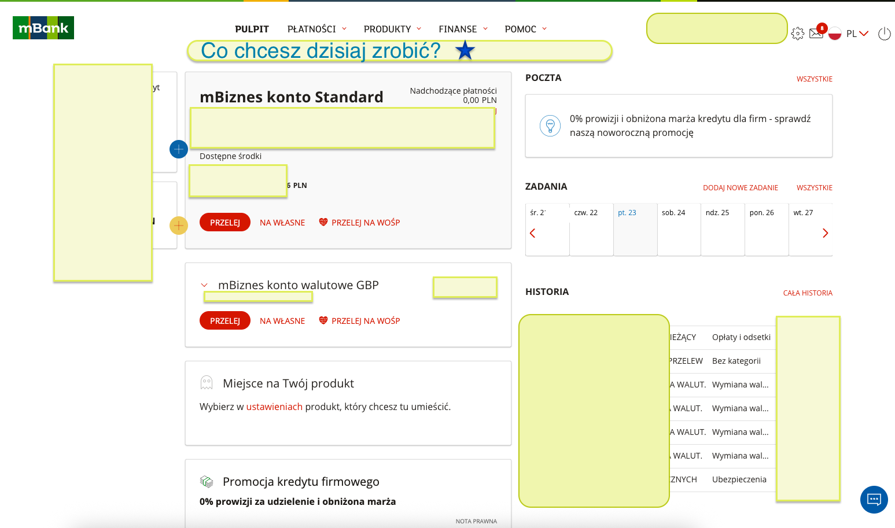
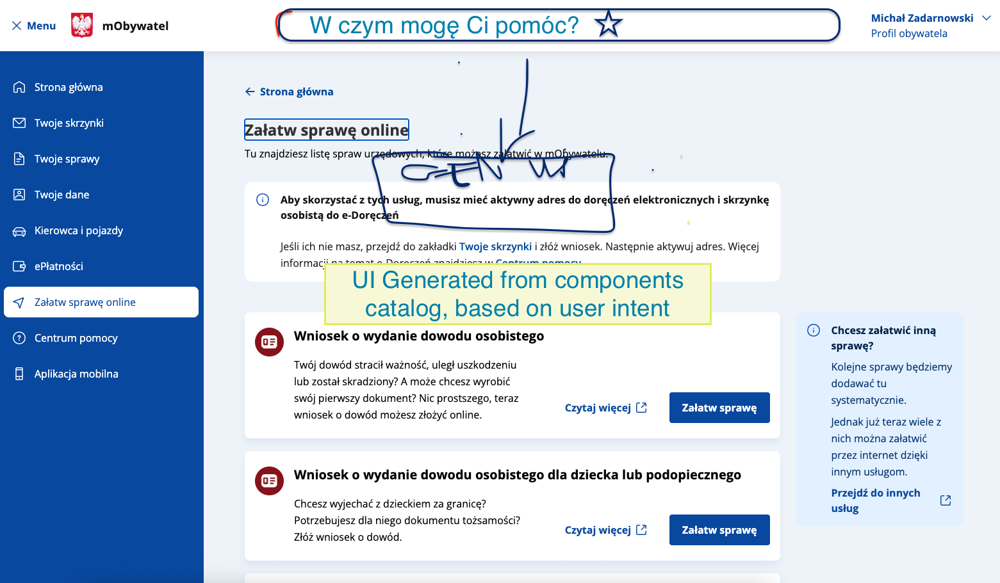
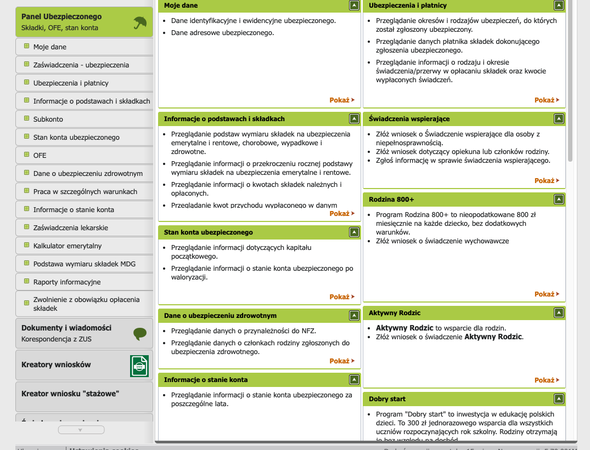

01 / 09
Smart apps
Interfejs sterowany intencją, zasilany małymi modelami językowymi.
intencja
→
funkcja
→
UI
Mądra aplikacja = istniejąca aplikacja + mały model + zatwierdzone akcje i komponenty.
Punkt wyjścia
🧭
To nie kolejny chatbot
- Użytkownik mówi, czego chce, zamiast szukać właściwej ścieżki.
- Model nie „improwizuje produktu”, tylko uruchamia znane możliwości aplikacji.
- Interfejs pozostaje realny, użyteczny i kontrolowany.
Przekaz otwierający: problem UX najpierw, model dopiero potem.
Problem
02 / 09
Typowa ścieżka w aplikacji
5 kroków, żeby zrobić jedną rzecz
1
Otwórz menu
↓
Znajdź właściwą sekcję
↓
Odszukaj konkretną funkcję
↓
Wypełnij formularz
5
Potwierdź i czekaj na wynik
Interfejs sterowany intencją
„Pokaż mi ekran do zmiany danych rozliczeniowych”
→ model wybiera zatwierdzoną akcję
→ aplikacja renderuje właściwy UI
→ model wybiera zatwierdzoną akcję
→ aplikacja renderuje właściwy UI
Użytkownik podaje cel. Aplikacja wykonuje właściwą akcję.
Teza: użytkownicy myślą w rezultatach, nie w strukturze menu.
Pomysł
03 / 09
Dodaj warstwę intencji. Zachowaj aplikację.
Intencja użytkownika trafia do lekkiego modelu, a model mapuje ją na znaną funkcję albo gotowy interfejs.
Warstwa użytkownika
Krótka instrukcja w języku naturalnym: cel, nie ścieżka.
↓
Warstwa smart
Mały model wybiera z katalogu zatwierdzonych akcji i wzorców UI.
↓
Istniejąca aplikacja
Backend, routing, formularze, komponenty, autoryzacja i logika biznesowa.
Przepływ wykonania
„Porównaj wyniki sprzedaży tego tygodnia z poprzednim.”
- Model rozumie intencję.
- Wybiera dozwoloną akcję.
- Aplikacja pokazuje żądany interfejs.
Najmocniejsza linia: nie przebudowujemy produktu, dokładamy warstwę intencji.
Technologia
04 / 09
Dlaczego małe modele?
Przy zadaniu ograniczonym przez znany zestaw akcji „wystarczająco dobre” wygrywa z „maksymalnie dużym”.
Korzyści produktowe
- niższy koszt uruchomienia
- niższe opóźnienie
- większa prywatność
- lokalnie / na urządzeniu / prywatny serwer
Korzyści architektoniczne
- łatwiej ograniczyć zakres działania
- łatwiej stroić pod konkretną domenę
- łatwiej utrzymać przewidywalny output
- łatwiej wpiąć w istniejący produkt
Silnik przykładowy
◎
FunctionGemma 270M
Specjalizowana wersja Gemma 3 270M, dostrojona do wywołań funkcji i mapowania języka naturalnego na akcje API.
- model dostrojony do wywołań funkcji
- otwarte wagi modelu
- licencja do odpowiedzialnego użycia komercyjnego
- dobry wybór przy zdefiniowanej powierzchni API
- dobry wybór dla podejścia local-first i prywatnych wdrożeń
270M
Gemma 3
wywołania funkcji
otwarte wagi
lokalnie / prywatnie
język naturalny → wybór funkcji → działanie produktu
Nie sprzedawaj „magii”. Sprzedaj dopasowanie modelu do ograniczonego problemu.
Demo
05 / 09
Użytkownik mówi, czego chce. Aplikacja reaguje.
Żadnych menu, żadnych formularzy. Jedno zdanie uruchamia właściwą funkcję produktu.
Najważniejsze nie jest to, że model „odpisuje". Najważniejsze jest to, że produkt reaguje.
Najciszej mówiony slajd. Wideo ma wykonać robotę.
Use Case
06 / 09

Use Case
07 / 09

Use Case
08 / 09

Wniosek
09 / 09
Aplikacje mogą stać się mądrzejsze bez zamiany w gigantycznych agentów chmurowych.
Zacznij od ograniczonych, zatwierdzonych akcji.
Zostaw logikę krytyczną po stronie aplikacji.
Użyj małego modelu jako warstwy intencji.
Przyszłość nie musi oznaczać „chat zastępuje UI”.
Przyszłość może oznaczać: UI rozumie intencję.
Przyszłość może oznaczać: UI rozumie intencję.

Zakończ tezą produktową, nie szczegółem modelu.